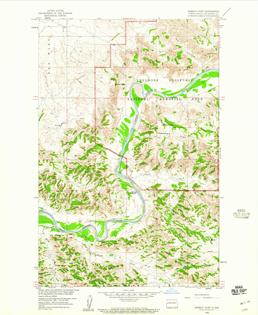
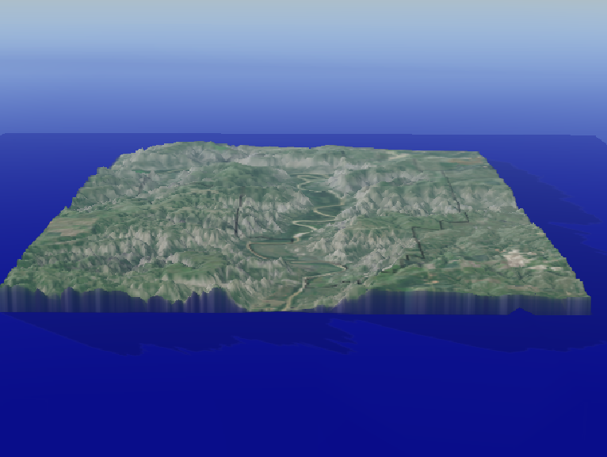
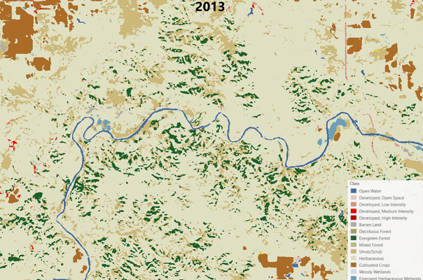

Topographic Look at Sperati Point
Exploring a 1958 USGS Topographic Quadrangle of Sperati Point

Explore TR Nat'l Park
Self-paced adventure through a 3D model of the park

Landsat-8 DL Land Classification GIF
An animated look at deep learning land classification rasters from May-June, 2013 to 2020